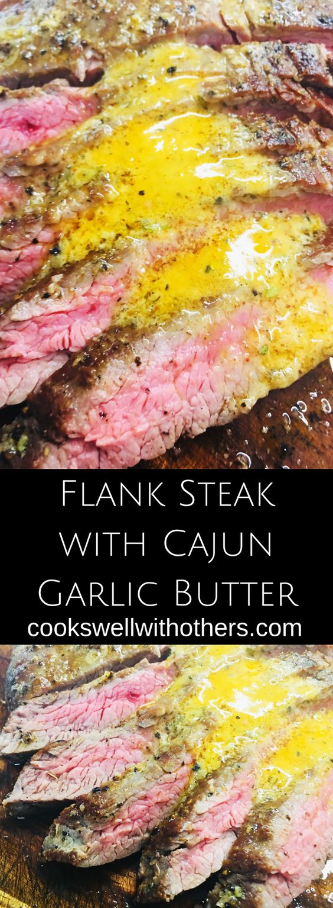

Flank Steak with Cajun Butter Garlic

Cajun garlic butter takes this steak over the top
This steak will melt in your mouth and the flavors are out of this world
Great with a side of potatoes and asparagus
It is best cooked in a cast iron skillet because it is heavy and evenly distributes heat
Ingredients
- 1 1/2 to 2 pound flank steak
- 2 Tbsps olive oil
- kosher salt, pepper
- 4 Tbsps butter at room temperature
- 3/4 Tbsp cajun seasoning
- 1/2 Tbsp garlic paste or minced garlic
Steps
- Step 1: Brush the steak with 1 Tbsp of the olive oil and sprinkle both sides with kosher salt and pepper.
- Step 2: In a small bowl add the butter (at room temp), cajun seasoning, and garlic. Stir until evenly mixed.
- Step 3: In a skillet over medium high heat add the remaining olive oil and the steak. Cook 3-5 minutes per side for medium rare to medium doneness. During the last minute of cooking spoon 1 Tbsp of the cajun garlic butter on top of the the steak and let it melt into the steak.
- Step 4: Remove the steak from the pan and let it rest 5 to 10 minutes.
- Step 5: Slice the steak against the grain and serve with remaining cajun garlic butter over top.